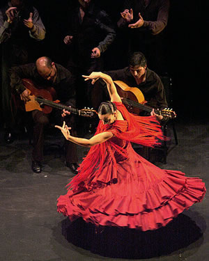
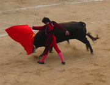

España está de moda 
España está de moda por primera vez quizás en los últimos cuatro siglos. Unos meses atrás la revista francesa Paris Match decía: «España arrasa en Francia y en Europa. Sus diseñadores de moda, su música, su pintura, su cine, se han puesto de moda en el continente y es difícil que alguien los desbanque de esa posición».
Es que la cultura española viaja y es bienvenida y aplaudida en los lugares más distantes. Una exposición de Salvador Dalí ocupó el Museo Pushkin de Moscú, el Ballet Nacional de España se presentó en el Metropolitan de Nueva York y la literatura española se lee por todas partes . El cine español también es muy popular en todo el mundo y a muchas personas les encantan los actores españoles como Penélope Cruz o Antonio Banderas o el director Pedro Almodóvar.
En Francia hay una españomanía en forma de exposiciones de arte y de películas. La fiebre española alcanzó de lleno en la ciudad de Nîmes en el sur de Francia, donde un millón de personas vieron corridas de toros, bebieron sangría y comieron toneladas de tortillas de patatas en un festival de lo español. En Londres es igual. Harrods, el más exclusivo de los grandes almacenes londinenses, dedicó un mes a España con los escaparates llenos de todo tipo de productos hechos en España. También hay mucho entusiasmo por el teatro y la pintura española.
A los italianos les encanta España. En los últimos cinco años el número de visitantes de Italia se ha duplicado; hace un par de años 1.200.000 visitantes italianos se esparcieron por tierras españolas. En Roma se han abierto dos escuelas de baile flamenco. Pero lo más importante es que la demanda del producto cultural español también se extiende a los centros urbanos menores. Es cierto que España es un país en movimiento y la economía española sigue creciendo.
Españolear está de moda, y España atrae y seduce en el mundo por su vitalidad, su capacidad creativa y su prosperidad.